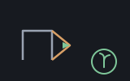

A reckoner seed: turtle, LOGO at a prompt — machines/seeds/seedturtle.shoddy

TURTLEFORWARD 100, TURTLERIGHT 90, four times,
and there is a square on the screen. That is what this seed is for, and it
is the oldest reason anybody ever put a language in front of a
beginner.
The first resource whose state is Shoddy's own. A recio file, an isam table and a scribbler window all keep their state where the operating system keeps it: a word reads the binding and never writes it, because the bytes and the pixels are not in the reckoner. A turtle is different — its position, heading, pen and colour live in a Shoddy record, and every step changes them.
So this is the seed that needed RckUpdated,
reckoner's other half of RckOpened:
a way for a word to say the thing under this name has moved.
Without it a turtle could be opened and asked where it was, and never
advanced. With it the resource model is complete — a resource can be
opened, moved and shut.
What the binding holds. ResHand is the
scribbler slot, exactly as seedscribbler
holds one; a Scribbler is its own value kind and will not fit
in a binding. ResData is the turtle's own seven: x, y,
heading, pen, and three colour channels. Between them they are a whole
Turtle, rebuilt on every call and written back whenever it
changed.
Nothing here aborts, and turtle
deserves the credit: it has not one Error in it. Every guard
in the seed is about arguments — an angle that is not a number, a colour
that is not — rather than about the machine being fragile.
The blit is not automatic, and that is a choice worth
stating. Drawing goes into a buffer and TURTLEBLIT pushes it
to the window, so a hundred steps cost one repaint rather than a hundred.
A session that draws and sees nothing has forgotten
TURTLEBLIT, and that is the price of not making every
TURTLEFORWARD flicker.
Headings wrap into 0–360. A full circle reads as
0 rather than 360, and a left turn of 90 from
straight up reads as 270 rather than -90 — so a
heading is always a compass bearing.
> 240 240 "t" TURTLEOPEN
ok: opened t
> "t" TURTLEWHERE
x: { 120 120 0 } ' the centre, facing up
> "t" 70 TURTLEFORWARD "t" 90 TURTLERIGHT
> "t" 70 TURTLEFORWARD "t" 90 TURTLERIGHT
> "t" 70 TURTLEFORWARD "t" 90 TURTLERIGHT
> "t" 70 TURTLEFORWARD "t" 90 TURTLERIGHT
> "t" TURTLEWHERE
x: { 120 120 0 } ' a closed square brings it home
> "t" 255 160 60 TURTLESETPEN
> "t" TURTLEBLIT
> "t" "square.png" TURTLESAVE
x: True
> "t" CLOSE
ok: closed tThe turtle survives UNDO, and so does its walk: undoing
restores the stack, and the turtle stands where the walking left it — the
resource table is not part of what UNDO rewinds.
| Word | Description |
|---|---|
| TURTLEOPEN ( w h name -- ) | Open a w by h window with a turtle at its centre facing up, pen down, drawing white on black, and keep it under that name. |
| TURTLEFORWARD ( name d -- ) | Move d forward, drawing if the pen is down. |
| TURTLEBACK ( name d -- ) | Move d backward, drawing if the pen is down. |
| TURTLERIGHT ( name deg -- ) | Turn deg degrees clockwise. |
| TURTLELEFT ( name deg -- ) | Turn deg degrees anticlockwise. |
| TURTLESETHEADING ( name deg -- ) | Face deg degrees, with 0 straight up and clockwise positive. |
| TURTLEGOTO ( name x y -- ) | Move straight to x, y, drawing if the pen is down. y counts downward. |
| TURTLEHOME ( name -- ) | Back to the centre facing up. Pen and colour are kept, and nothing is erased. |
| TURTLEPENUP ( name -- ) | Lift the pen, so moving leaves no trail. |
| TURTLEPENDOWN ( name -- ) | Put the pen down, so moving draws. |
| TURTLESETPEN ( name r g b -- ) | Draw in that colour from now on. Channels are 0 to 255. |
| TURTLEWHERE ( name -- list ) | Where it is and which way it faces: a list of x, y and heading. |
| TURTLEBLIT ( name -- ) | Show what has been drawn. |
| TURTLESAVE ( name path -- ok ) | Write the drawing to a PNG file; True on success, False on a path it cannot write. |
CLOSE and BOUND are
reckoner's own and work here without this seed
saying anything about them, and halifax
shuts every bound resource when you quit.
| User | How | |
|---|---|---|
| halifax | The calculator's turtle graphics — a window opened from the prompt and walked across lines. | |
| sparky | Sparky folds it too. A turtle picture has no natural finish, so a session that forgets TURTLEBLIT can still ask for the buffer. |
A mill claims this seed by folding RckSeedTurtle over its
reckoner state, which is all halifax does.
| Machine | Why | |
|---|---|---|
| cuttle | The Cell type the turtle's seven are stored in, and its arguments cross as. | |
| reckoner | RckReg and the argument readers, the named-resource table, and RckUpdated — which exists for this seed. | |
| seq | List plumbing under the argument readers and the seven-field data cell. | |
| turtle | The domain this seed bridges: the Turtle record and every word that moves one. |